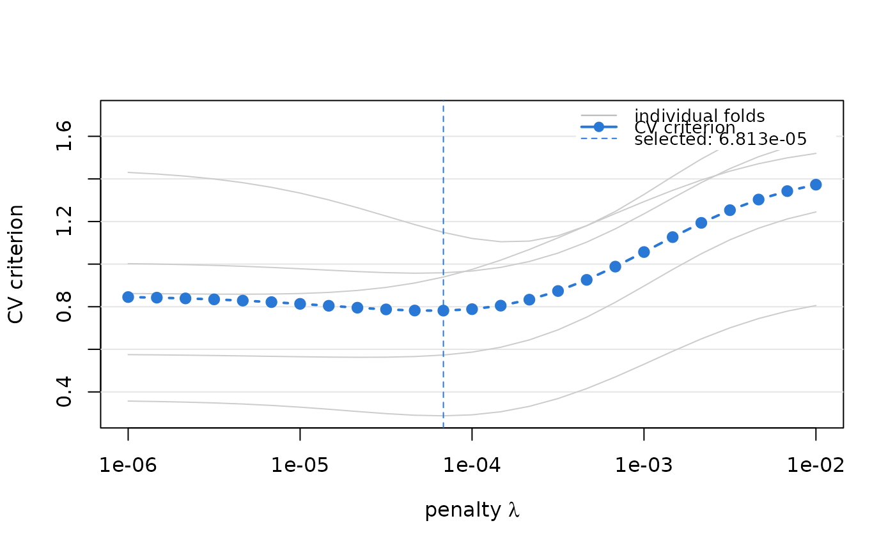

Chooses the penalty \(\lambda\) of the penalized shape estimator
(method = "penalized" in trajchain()) by \(F\)-fold cross-validation
over subjects. For each fold, the shape function \(\hat f^{(-j)}\) is
fitted on the training subjects and the ratio \(\hat r_{(j)}\) is
estimated on the test subjects; the criterion
$$\sum_{v} \int_{\tau_0 + v}^{\tau_1} w_v(t) \left\{\hat f^{(-j)}(t) -
\hat r_{(j)}(t, t - v)\, \hat f^{(-j)}(t - v)\right\}^2 dt$$
measures how well the training fit reproduces the ratios seen in held-out
subjects. Here \(w_v(t) = n_v(t) I\{n_v(t) \ge c^*\}\), \(n_v(t)\) is the
number of training observations with preceding gap \(v\) within one
bandwidth of \(t\), and the integral is approximated by a Riemann sum with
step dt on the unit time scale. The criterion is averaged over folds and
minimized over lambda_grid.
Arguments
- Y
Numeric matrix of marker values with one row per subject and one column per scheduled visit; column 1 is the baseline measurement at study entry. Visits that were not observed (after death, dropout or end of follow-up) are
NA.- entry_age
Numeric vector of ages at study entry (\(A_i\)), one per row of
Y.- visit_gaps
Scheduled time between consecutive visits, on the same scale as
entry_age: a single number for equally spaced visits, or a vector \((v_1, \dots, v_k)\) of lengthncol(Y) - 1. Use the scheduled (rounded) gaps, not observed average gaps.- tau0
Starting age \(\tau_0\) of the trajectory (the target population consists of individuals alive at this age).
- tau1, m
End of the age interval \(\tau_1\), or the number of grid points \(m\); supply one of them. \(\tau_1 - \tau_0\) must be an integer multiple of the grid step.
- grid_step
Spacing \(\delta\) of the grid. The default is the greatest common divisor of
visit_gaps(the visit gap itself when visits are equally spaced). Use a value \(v/q\) to refine the grid for widely spaced visits (Section 5 of the paper).- bandwidth
Ratio bandwidth \(h\) on the age scale:
"rot","cv", the result ofcv_bandwidth(), or a positive number. Within each training fold it is rescaled by the ratio of the training-fold to the full-sample standard deviation of the entry ages.- lambda_grid
Candidate values of \(\lambda\). A value whose fit fails in any training fold gets an infinite criterion. The default is the logarithmic grid of 25 values from \(10^{-6}\) to \(10^{-2}\) used in the paper.
- threshold
The constant in \(c^* = \mathrm{threshold} \times n h\), where \(h\) is the ratio bandwidth on the unit time scale, \(h/(\tau_1 - \tau_0)\): ratio estimates based on fewer than \(c^*\) observations receive zero weight in the penalized estimator. The paper uses 0.6.
- n_folds
Number of folds \(F\).
- seed
Seed for the random partition into folds, or
NULLto use the current random number stream.- dt
Step of the Riemann sum on the unit time scale \((t - \tau_0)/(\tau_1 - \tau_0)\); the default is \(1/(4m)\).
- constraint
How the penalized problem is normalized:
"anchor"(default; the solution used for the results in the paper) or"integral"(quadratic program with the integral and non-negativity constraints).- kernel
Kernel; see
kernel_function().
Value
An object of class "trajchain_cv" (with type = "lambda"), a list
with components lambda (the selected value), lambda_grid, cv (the
criterion averaged over folds; Inf where the fit failed), scores (the
criterion for every value and fold), bandwidth and settings.
References
Hu, P., Wu, Y., Zhao, Y. and Sun, Y. Nonparametric estimation of marker trajectories in the presence of death and delayed entry. Manuscript under revision at Biometrika.
See also
trajchain(), which accepts the result as its lambda argument.
Examples
# \donttest{
sim <- simulate_cohort(n = 1000, visit_gaps = "unequal", seed = 11)
cvl <- cv_lambda(sim$Y, sim$entry_age, sim$visit_gaps, tau0 = 0, tau1 = 1)
cvl
#> <TrajChain cross-validation: penalty lambda>
#> 5-fold CV over subjects, 25 candidate values, ratio bandwidth h = 0.1084
#> selected lambda = 6.813e-05
#>
#> lambda cv
#> 1.000e-06 0.8454
#> 1.468e-06 0.8426
#> 2.154e-06 0.8390
#> 3.162e-06 0.8344
#> 4.642e-06 0.8287
#> 6.813e-06 0.8217
#> 1.000e-05 0.8135
#> 1.468e-05 0.8045
#> 2.154e-05 0.7954
#> 3.162e-05 0.7875
#> 4.642e-05 0.7822
#> 6.813e-05 0.7817
#> 1.000e-04 0.7885
#> 1.468e-04 0.8050
#> 2.154e-04 0.8331
#> 3.162e-04 0.8737
#> 4.642e-04 0.9261
#> 6.813e-04 0.9883
#> 1.000e-03 1.0567
#> 1.468e-03 1.1268
#> 2.154e-03 1.1937
#> 3.162e-03 1.2533
#> 4.642e-03 1.3032
#> 6.813e-03 1.3428
#> 1.000e-02 1.3730
plot(cvl)

fit <- trajchain(sim$Y, sim$entry_age, sim$visit_gaps, tau0 = 0, tau1 = 1,
lambda = cvl, mu_method = "pooled")
# }